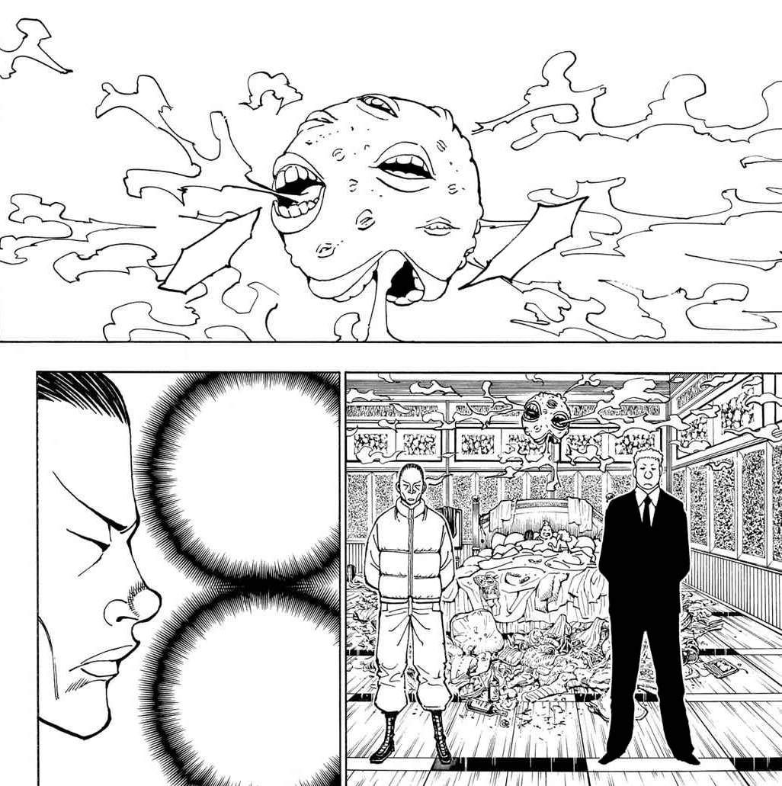
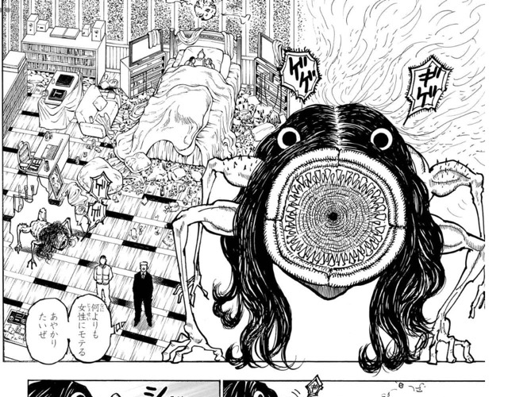

第8王子 サレサレ
- 登録名
- サレサレ＝ホイコーロ
- 分類
- 王子
- 初期配置（現在地ではありません）
- 第1層 1008号室
初期配置は台帳の当初の担当先です。後任の人物や復元枠も含み、全員の出航時の在室を示すものではありません。後の展開は下の折りたたみにまとめています。
人物詳細（後の展開を含む）
- 状態
- 死亡（第382話の画像では名前・死亡の明示なし）（第382話時点・再照合待ち）。死亡の描写は第382話の提供画像では確認できない（ベッドに横たわる男が台詞なしで描かれるだけで、名前・死亡の明示がない）
- 所属
- カキン王国
- 母（王妃）
- 第五王妃スィンコスィンコ
- 最後の所在
所在候補（在室は未確認）：第1層 1008号室（第382話時点・再照合待ち・場所は推定）
- 念使用の確認
- 念使用：未確認（使用不可とは限りません）
- 念系統
- 未確認
- 念能力
- 本人固有の能力は未確認
- 守護霊獣
- 複数口球体型念獣
家族関係
- [親子] 第5王妃 スィンコスィンコ（母）
守護霊獣：複数口球体型念獣
- 外見・形態
- 複数の口を持つ球体型の念獣
- 守護霊獣の念系統
- 操作系
- 念能力
- 操作系・拡散誘導型。球体からガスを吐き出し、一定量を吸い込んだ者をサレサレの信奉者（操り人形）にする


状態の経緯
- 第382話：死亡（第382話の画像では名前・死亡の明示なし） — 第382話で、ベッドに横たわる肥満体の男と驚いて指さす女性たち、耳に手を当てる私設兵が台詞なしで描かれる場面（8日目20:00の晩餐会開始より前のページ）を、サレサレの死亡として扱う（E382-003）。名前・部屋番号・死亡・殺害方法の明示はなく、リハンによる守護霊獣の捕食の後にウショウヒが関与したとする記録も画像では確定しない。第388話でツベッパが第8王子は死んだと推理する（推理のみ） 本サイトでは7日目夜に仮置きするが、6日目夜〜8日目夜（晩餐会前）の可能性を残す（2026-10-20）。（原作再照合待ち） 根拠の出来事
編集状況
- 人物ID：P08
- 状態の確認話数：第382話／根拠の出来事：E382-003（原作再照合待ち）
- 公開データの登録情報から生成したページです。個人メモ・編集内容・調査記録は含めません。
- 一覧の詳細でメモ・編集
情報源：公開人物台帳・公開出来事台帳。